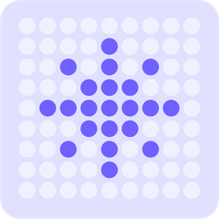
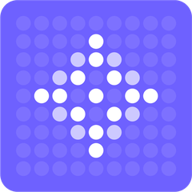
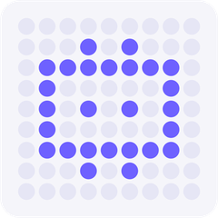
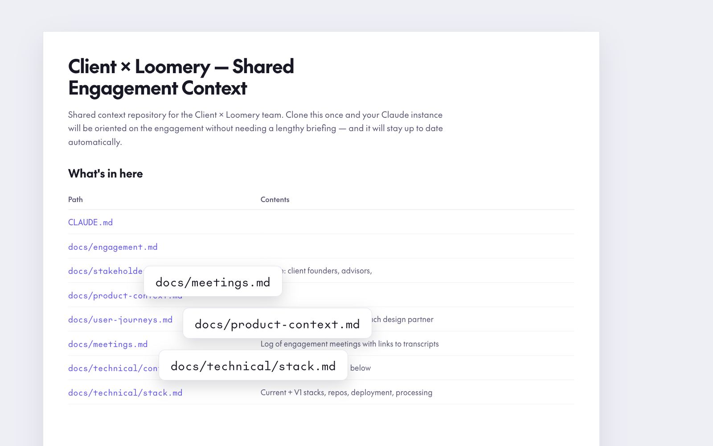
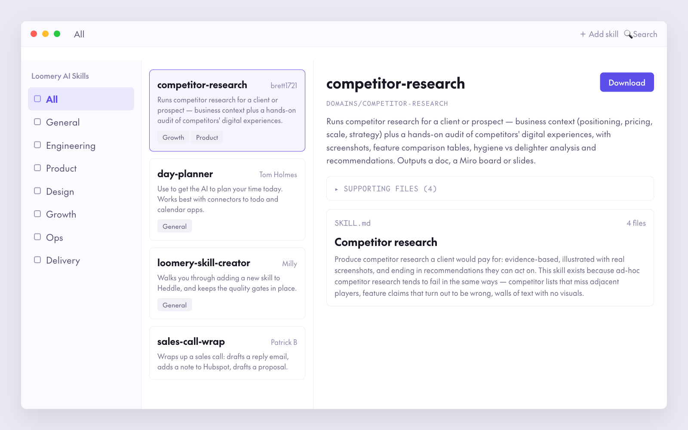
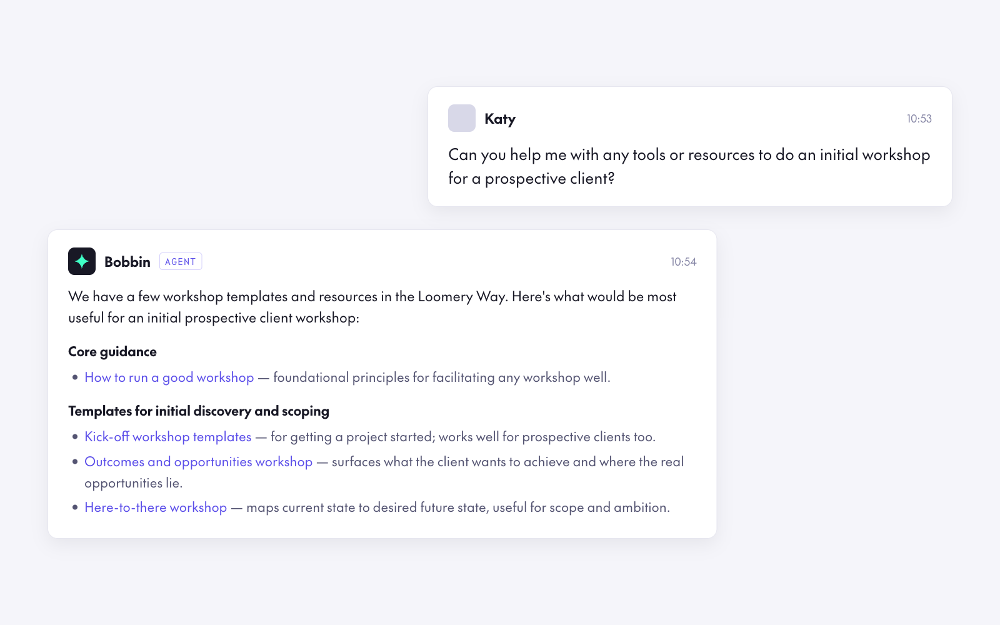
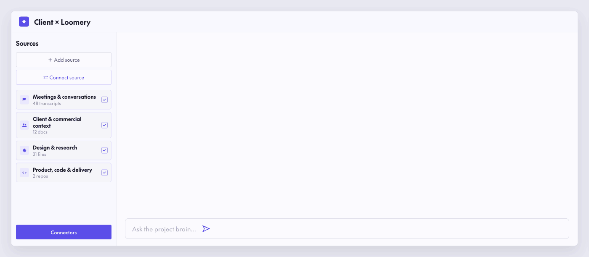

WarpA queryable project brain
Every project's real documentation, decisions, constraints and code, pulled into one shared, version-controlled place, so agents and people work from the same source.
Find out moreYarnAI is how Loomery teams put senior product, design and engineering judgement in charge of AI agents, end to end, so clients get speed without losing control of what ships.
The gap
Across the lifecycle
Without AI · 12 weeks
Build is where the calendar goes — every other stage waits on it.
What it is
YarnAI is Loomery's method for running AI agents across a whole project, not just inside a code editor, putting senior judgement in charge of what agents draft so clients get speed without losing control of what ships. Six parts make up the stack; Warp, Heddle and Bobbin, named after parts of a loom, are the core of it.

WarpEvery project's real documentation, decisions, constraints and code, pulled into one shared, version-controlled place, so agents and people work from the same source.
Find out more
HeddleWhere verified, reusable AI skills live, so a good pattern on one project shows up on the next instead of being reinvented from scratch.

BobbinPuts Loomery's hard-won knowledge and standards a question away, so the method holds even when the person running a project is new to the team.



Packages of instruction & code
A growing library inside Heddle covering discovery standards, delivery fundamentals and engineering patterns, for use by people and agents, ready to adapt to your organisational context.
Every team, every project
An owner on every decision, the reasoning shown, and nothing ships unreviewed. Tests and CI gate every agent branch before it earns more autonomy.
Standalone, used on any project
Prompt libraries, architecture scaffolds, test templates and decision frameworks, so no project starts from a blank page.
A deep dive
A closer look at how Warp turns scattered tools into one shared, working context, kept current automatically.
Ingests from your tools
context · decisions · what changed since last time ↓
A Warp session

drafted, never shipped ↓
What you get
↺ and back into your tools, every session. Warp stays current as a side-effect of working.
Principles
AI accelerates the first 70% of the work. Craft and judgement own the last 30%, the part a model can't bring.
In practiceno agent output merges without a named reviewer
Tests, CI and static analysis come before agent freedom. We review the commits, not the summary, and bin mediocre work rather than ship it.
In practicean agent's work can't merge until the automated checks pass
Standards and decisions get written down as machine-readable context, so agents and teammates act on them reliably instead of everyone re-explaining.
In practicedecisions live in the repo, not in a chat
We validate with real evals, not gut feel, treat agents as a genuine trust and security surface, and stay cost-aware about what's earning its keep.
In practiceevals run per change, cost tracked per project
Evidence
Vorboss
Utilities
3× fasterRebuilt the channel-partner portal with AI-native delivery: a working demo in a day, live product in a week.
University of Exeter
Higher education
60 days savedA university-wide agent platform on AWS with reusable templates and single sign-on.
Bite Engineering
Construction
Team 50% smallerRebuilt an AI orchestration platform for structural engineers, taking a rough alpha to revenue-ready software.
The team shape
A cross-functional team · 7 people
Seven people, each holding one part of the work.
Getting there
We use this across Loomery to keep YarnAI embedded as capability grows, whatever stage a team is starting from. We help clients apply it to their own teams.
Working with us